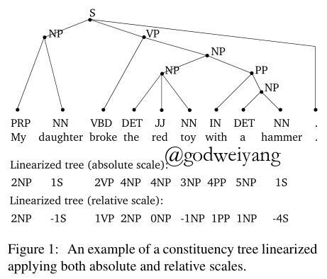
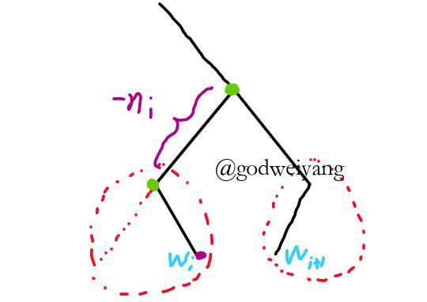
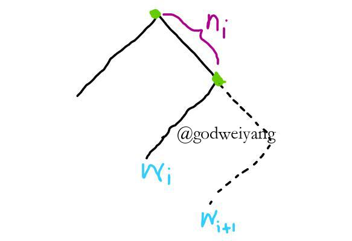
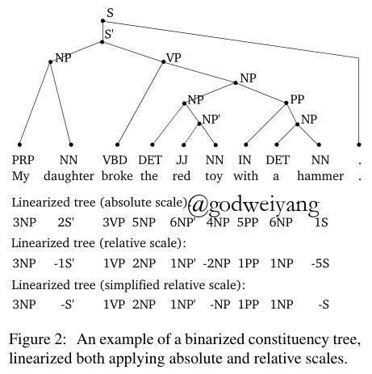
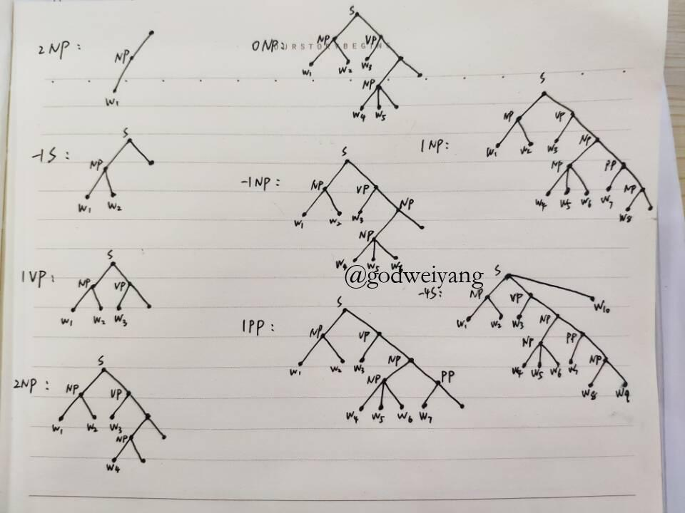
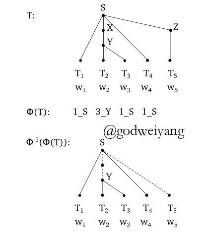
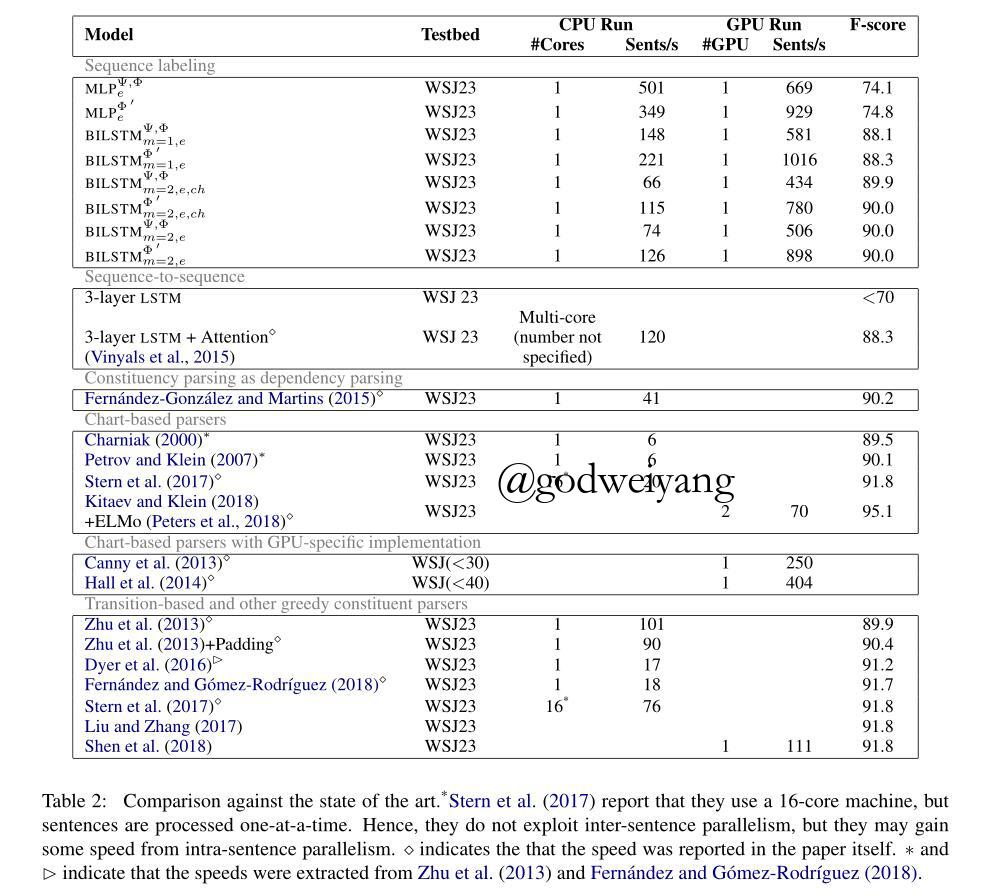

貌似已经有好几个月没怎么看过论文了，之前一直在写论文，一直没空更新博客，最近闲下来把最后几篇没看完的论文看了。
论文地址：Constituent Parsing as Sequence Labeling
代码地址：Code
介绍
本文定义了一种新的树的序列化方法，将树结构预测问题转化为了序列预测问题。该序列用相邻两个结点的公共祖先（CA）数量和最近公共祖先（LCA）的label来表示一棵树，并且证明了这个树到序列的映射是单射但不是满射的，但是提出了一系列方法来解决这个问题。
相比于之前的序列方法，比如Parsing as Language Modeling，本文的序列化有所不同，主要体现在之前的方法都是seq2seq的，也就是输入句子，直接输出树的括号表达式序列。但是这种方法输出不是定长的，所以结果可能会比较差。本文的方法将输出长度固定在了句子长度减1上（只针对不存在一元产生式的句法树，这种情况之后讨论），所以可以将每个预测分配到每个单词上，然后用序列标注的方法来解决。
树的序列化
记号和基础知识
记输入句子为$\textbf{w} = [w_1, w_2, \ldots, w_N]$，其中$w_i \in V$。$T_N$为拥有$N$个叶子结点的不含有一元产生式的句法树集合。句法分析的任务就是将输入句子$\textbf{w}$映射到句法树$T_N$。
为了将句法分析转化为序列标注任务，需要定义一个树的序列化方法：$\Phi_N : T_N \to L^{N - 1}$，也就是将一棵有$N$个叶子结点的句法树转化为长度为$N - 1$的序列。并且该映射函数还得满足一定的条件，首先它一定得是一个函数（也就是对于所有的句法树，都得找到一个对应的序列），然后这个函数还得有单射性（也就是句法树和序列要一一对应，不能存在两个句法树对应同一个序列，否则的话预测出来一个序列可能解码出两棵句法树，那就尴尬了），当然要是还满足满射性就最好了（也就是对于每一个序列，最好都能找到一棵句法树与之对应，不然预测出一个序列无法找到对应的句法树也很尴尬），当然找不到也没事，后文有解决方法。
然后需要定义一个函数，将句子映射为序列：$F_{N, \theta} : V^N \to L^{N - 1}$。这个映射就通过序列标注的LSTM来实现了，$\theta$就是LSTM的参数。
最后通过函数$F_{N, \theta} \circ \Phi_N^{-1}$将输入句子转化为对应的句法树。那么$F_{N, \theta}$没什么好说的，就是一个序列标注模型，下面重点就是介绍如何设计函数$\Phi_N$。
编码
之前说到了将一棵有$N$个叶子结点的句法树转化为长度为$N - 1$的序列，这个序列是这样生成的：对于单词$w_i$，分配给它一个二元label $l_i = (n_i, c_i)$，其中$n_i$为单词$w_i$和$w_{i + 1}$的CA数量，$c_i$为它俩的LCA的label。

如上图所示，这个序列的$n_i$有两种表示方法。一种就表示成CA的绝对数量，如图中第一行所示。还有一种表示成后一个数与前一个数的差值，这样能减少元组的数量，但是会出现负数。当然在这个例子中貌似并不能看出数量减少了。。。
$k$叉树编码：如果句法树所有产生式全部是$k$叉的，那么还可以将编码进一步简化，具体做法就是将所有的负数$n_i$统一为一个负数就行。为什么这里就不需要对负数进行区分了呢？这还得从句法树的解码说起，我们看一看是怎么从序列解码成句法树的。
当遇到一个负数$n_i$的时候，说明${\rm LCA}(w_{i}, w_{i+1})$到根结点路径的长度比${\rm LCA}(w_{i-1}, w_i)$到根结点路径长度少$-n_i$个结点。大致结构如下图所示（图画的丑，不要介意）：

可以看出，$w_{i+1}$这棵子树接在了从$w_i$到根结点路径上的第$-n_i + 2$个结点上。但是$w_{i+1}$具体在哪还无法确定，只能确定它的子树根结点位置。另外需要解释的是，为什么这里是常数2？因为$w_i$到$w_{i-1}$与$w_i$的LCA的距离一定是2，如果不是的话，中间就一定会有其他结点，那么就一定存在结点位于$w_{i-1}$与$w_i$之间，这显然不可能。最后可以注意到，这种情况下，
如果$n_i$是正数的话，说明${\rm LCA}(w_{i}, w_{i+1})$到根结点路径的长度比${\rm LCA}(w_{i-1}, w_i)$到根结点路径长度多$n_i$个结点。大致结构如下图所示：

这种情况下，$w_{i+1}$这棵子树接在了从${\rm LCA}(w_{i-1}, w_i)$到$w_i$路径上的第$n_i + 1$个结点处。同样也无法确定它的准确位置，但是它所在的子树确定了从这分叉出去的。
回到正题，之前说到了对于$k$叉树，所有负数都可以统一起来，为什么呢？继续看上面$n_i$负数那张图，对于$w_{i+1}$所在子树，需要在从$w_i$到根结点这条路径上寻找一个分叉点，也就是它俩的LCA。如果这是一个$k$叉树，那么这个分叉点就一定是第一个孩子数不满$k$个的结点。因为如果再往下的话，孩子数都满了，再加子树孩子数一定大于$k$。再往上的话，就会导致这第一个结点孩子数小于$k$，因为从左到右遍历的，子树之间不会交叉，以后都不会有子树插入到这个结点处了。
下图就是简化序列化后的二叉树例子，第三行将所有的负数都用一个负号替代了：

我尝试过了按照这个序列构建出一棵树的过程，画了个草图给大家看看，可能有点乱（参照的是上面那个非二叉树的图）：

还有一个小trick就是对于有些直接连到根结点的叶子，用$({\rm ROOT}, c_i)$作为它们的label。
理论证明
主要证明两个性质，一个就是充分性（即每个句法树都能映射为一个序列），另一个就是单射性（即每个序列只能唯一对应一个句法树）。
充分性：
这个显而易见，对于每个句法树，相邻两个单词一定存在唯一的LCA，且它的label也是唯一的，所以充分性肯定能保证的。
单射性：
为了简便，首先证明不包含非终结符的树结构映射的单射性，再证明加上非终结符也是单射的。
如果用$(\bullet_i)$表示第$i$个叶子结点，那么句法树可以表示成如下的括号表达式：
\[
\alpha_0 (\bullet_1) \alpha_1 (\bullet_2) \ldots \alpha_{\left| w \right| - 1} (\bullet_{\left| w \right|}) \alpha_{\left| w \right|}
\]
更进一步，每个$\alpha_i$形式肯定是$[)]^*[(X]^*$，因为如果存在一个闭合的括号对，那么中间肯定还存在着一个叶子结点，这显然不可能。所以我们可以用$\alpha_{i)}$来替代$[)]^*$，用$\alpha_{i(}$来替代$[(X]^*$，将$\alpha_i$改写为$\alpha_{i)} \alpha_{i(}$，括号表达式可以重写为：
\[
\alpha_{0)} \alpha_{0(} (\bullet_1) \alpha_{1)} \alpha_{1(} (\bullet_2) \ldots (\bullet_{\left| w \right|}) \alpha_{\left| w \right|)} \alpha_{\left| w \right|(}
\]
注意到首尾两个元素一定是空的，接下来用$\beta_i$替换$\alpha_{i-1(}(\bullet_i)\alpha_{i)}$，得到序列：
\[
\beta_1 \beta_2 \ldots \beta_{\left| w \right|}
\]
更进一步，可以证明$\beta_i$一定只含有$[(X]^*(\bullet_i)$和$(\bullet_i)[)]^*$中的一个。因为如果两个都含有的话，说明存在$(X(\bullet_i))$这种一元产生式，但是因为一元产生式都提前处理过了，所以不可能存在。
接下来可以给每个$\beta_i$分配一个值$\delta(\beta_i)$，如果$\beta_i$左右两边都没有括号，那这个值就是0，如果左边有$k$个括号，那值就是$+k$，如果右边有$k$个括号，那值就是$-k$。如果将这些值写成序列：
\[
\delta(\beta_1)\delta(\beta_2)\ldots\delta(\beta_{\left|w\right| - 1})
\]
这个序列正好对应了之前的第二种编码，也就是编码成LCA的个数之差。这是为什么呢？可以看出，一直到$\beta_i$结束，没有闭合的括号数量正好就是$w_i$和$w_{i+1}$的LCA数量。所以$\delta(\beta_i)$就是$w_i$和$w_{i+1}$的LCA数量与$w_{i-1}$和$w_{i}$的LCA数量的差值。
最后这就验证了括号序列和之前的编码是一一对应的，单射性得证。解码的时候只需要将数字直接转化成对应的括号序列就行了。
而加上了非终结符之后，单射性不会受到影响。因为虽然两棵相同结构但是拥有不同非终结符的句法树，转化成括号序列后是相同的。但是因为之前的定义中，还有一个变量$c_i$来表示这个非终结符了，所以还是能够唯一对应过去的。
限制
上面定义的序列化函数有两个缺点：一是非满射，二是不能处理一元产生式，下面介绍一下解决方法。
对于一元产生式：
有两种一元产生式，一种是中间结点，还有一种是叶子结点的label。
对于中间结点，直接将一条链上的label合并成一个新的label就行了，方法和之前文章介绍的一样。
而对于叶子结点的label，一个方法是在解码之前先用一个函数预测一下每个叶子结点的label，如果为空，说明没有label，否则就加上这个label，然后再进行正常的解码。另一个方法是将之前的序列化的二元组扩展为三元组$(n_i, c_i, u_i)$，其中第三个元素就是每个叶子结点的label。
非满射：
非满射会导致的问题就是产生出来的序列可能无法映射到某一棵句法树。根据文中所说，一共有两种无法映射的情况。
一种情况是对于多叉树，相邻两对叶子结点的LCA的label预测不同。比如在最上面一张图中，“the red toy”如果预测为两个不同的label，那么就会产生矛盾。这种情况很好解决，只要在解码的时候只取第一个label，忽略后一个就行了。
另一种情况是序列可能会产生一元产生式，如下图所示：

根据图中序列，会产生下面那棵句法树，一元结点X并没有预测到。但其实因为一元结点已经提前合并了，所以如果预测到了一元结点，直接删掉不要就行了。
序列标注
这里就不细讲了，用的就是基本的BiLSTM + CRF序列标注模型，具体可以看这篇论文：End-to-end Sequence Labeling via Bi-directional LSTM-CNNs-CRF。
实验
这篇论文最大的卖点不是效果，而是速度快，下面是和其他模型的速度对比，可以看出，速度的确快了不少，达到了大几百句每秒。但是还是存在序列标注模型的老毛病，效果并不好，虽然比之前的高了，但是还是只有90%的F1。

结论与展望
这篇论文定义了一种新的句法树序列化方法，将句法树序列化为长度减1的序列，其中每个值就是相邻两个单词的CA个数和LCA的label。
看完这篇，我仔细想了想，其实之前的chart-based方法也都可以转化成序列，只不过都得特别处理一下一元产生式和多叉树，比较麻烦。以后可以考虑在这方面有所突破，速度快还是很nice的。